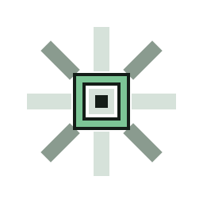
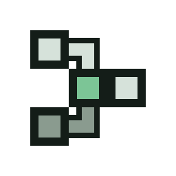
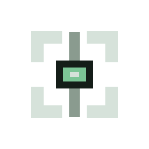

01 Signal Node
A telemetry beacon with a central datum and blocky signal reach.
Five SVG-only directions for a local-first system awareness console.

A telemetry beacon with a central datum and blocky signal reach.

Connected system nodes for topology, structure, and relationships.

An observer marker built from brackets and a central inspection datum.
Structured storage blocks with a semantic route through local data.
A compact standalone emblem with a subtle V structure and signal core.
Beacon and monitoring activity.
Topology and relationships.
Observation without surveillance.
Structured data regions.
Distinct product symbol.
Readable by silhouette.
Clear node pattern.
Strong bracket shape.
Block-map silhouette.
Best compact icon form.